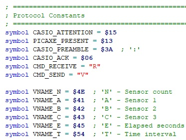
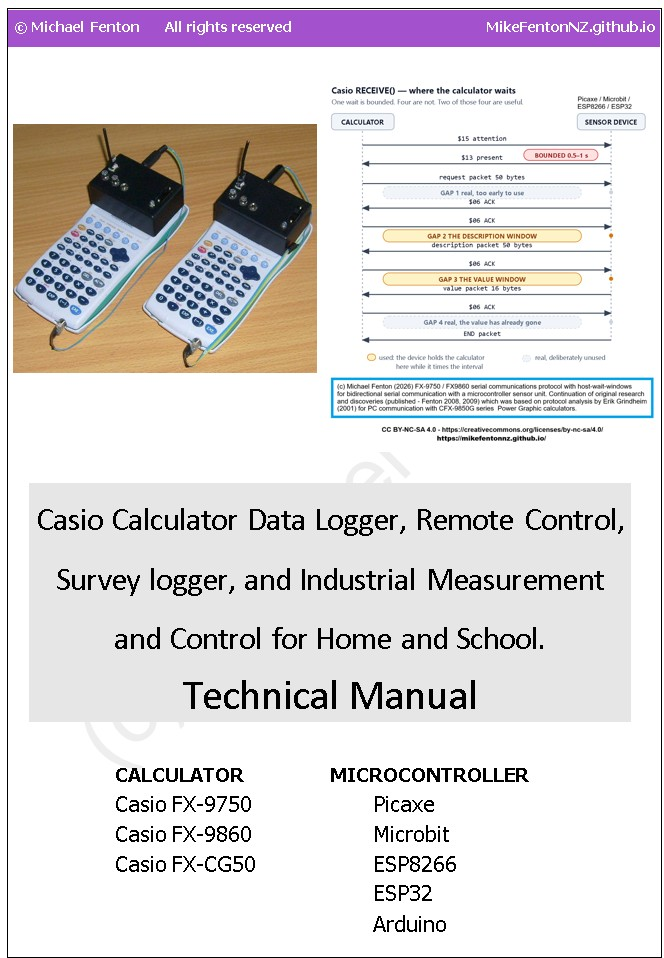
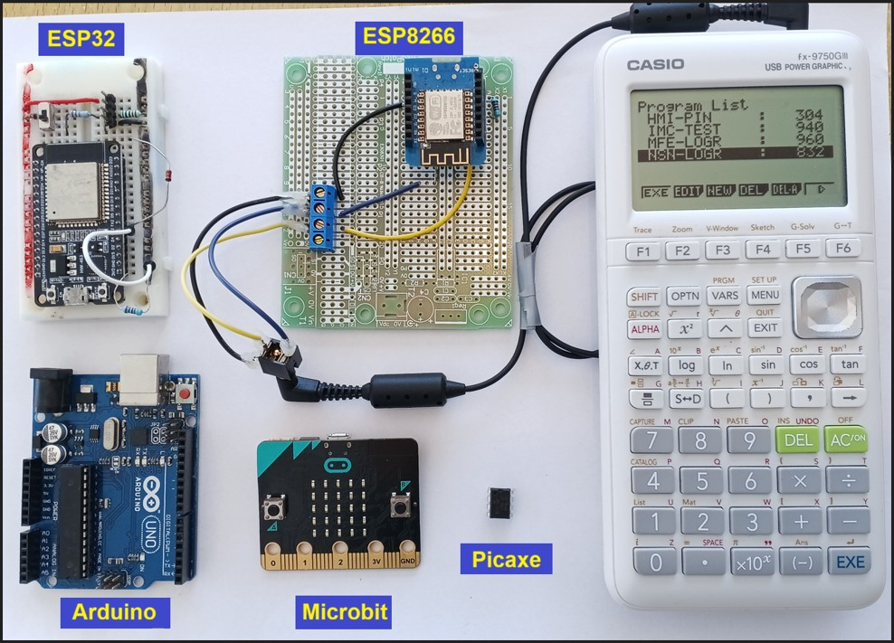
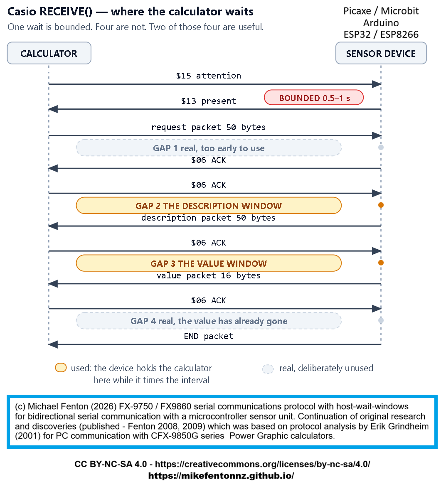
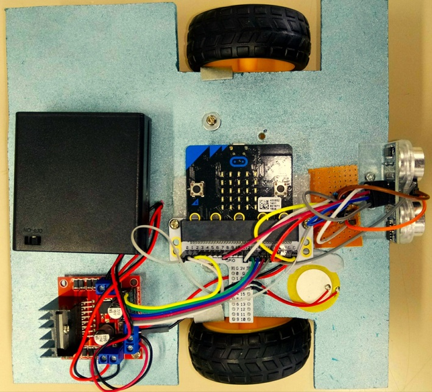

Casio calculator data logger, remote control, and IMC simulator - the $10 upgrade
Timed sensor logging and more on a calculator students already own
A memory of a forgotten opportunity, triggered by the new curriculum. What if there were a low-cost way to do real, hands-on, creative maths and science using a calculator many students already own? What if it were cross-curricular; a tool that learners and schools already have for physical education, health, technology, and robotics / instrumentation?
The forgotten feature in the 2.5 mm port of a Casio FX-9750 and FX-9860 is now available on my GitHub, open-source and free. It takes the burden off the teacher, because the learners become the experts - constructing, coding and repairing their own smart data logger that also acts as a remote control and automation control interface.
This is an extension of my 2008 research, which carried classroom validation and student feedback, now with a modern facelift and cross-platform compatibility. Learners can record heart rate, temperature, sound level, and other readings using sensors they build themselves, for cents or a few dollars.
The simplest build is a Casio FX-9750 or FX-9860 graphing calculator, a microcontroller costing a few dollars, and a cross-over cable. Sensor readings arrive at a set interval and land in the calculator's own lists, where the graphing and statistics tools students already know are waiting for them.
For a few dollars more, the Casio can log data from remote sensors wirelessly and serve a web page with data to smart devices including phones, tablets, and laptops.
The calculator needs no modification or firmware change. It does not need to know what is on the other end of the cross-over cable.
What made this possible. The legacy Casio serial protocol has positions in its RECEIVE() exchange where the calculator waits for the attached device without any deadline; there is never a COM ERROR no matter how long the wait. Four such positions were found by inserting a pause at every point in the flow, line by line, and recording what happened. Two of them are useful. A microcontroller can hold the calculator at one of those points while it counts out a sampling interval, so the device keeps time and the calculator simply receives.
These are called host-wait windows. The first two were found in 2007 on an FX-9750G Plus, and data logging demonstrated in 2008 classroom trials (the prior work is here: published). The remainder were found in October 2025. The third window is what makes reasonably precise unattended interval logging possible.
More than data logging: a new tool for a new need
I teach and develop STEM subjects at both the compulsory secondary education and adult tertiary levels, and I am also a research active scientist.
Recent work includes developing a Gateway Level 2 Electrical course - the programme of vocational learning delivered in schools. I also wrote Level 4 Industrial Measurement and Control assessments, and learning and assessment materials for a Level 4 4204 Electrical programme.
Writing Level 4 IMC assessments means I know exactly what that qualification demands, and what equipment it quietly assumes a provider already owns. Having taught Level 1 and Level 2 Applied mathematics in schools means I know exactly what can be put in front of a sixteen-year-old, and what a school can afford to put there. Standing in both places at once is what made the gap visible, and it is the subject of the Industrial Measurement and Control section further down this page. As far as I am aware, I am the first to use a FX-9750 caclulator in this configuration as an IMC simulator as an ultra-low-cost teaching tool.
The New Zealand school curriculum updates In August 2026 the Ministry of Education approved nine new industry-led subjects for development for senior secondary students, among them Applied Intelligent Systems, Engineering Technology, Energy and Infrastructure, and Next-Gen Manufacturing. Measurement, instrumentation and control sit underneath all four of them, and schools resourcing this teaching will go looking for equipment. This work arrives at about the right moment, at a price a school can actually meet. One half of the equipment is likely already owned by a learner. If a learner purchases a calculator, they will get far more hands-on real-world use across multiple subjects. This reframes the cost as an investment in more engaging and concrete learning. They will answer their own question - "when am I ever going to use that in the real world?"
Priority disclosure: Fenton, M. (2026). Casio Graphing Calculator Serial Interface: Priority Disclosure of Timing Discoveries, Encoding Invention, and Operational Modes (FX-9750 and FX-9860 Series). Zenodo. https://doi.org/10.5281/zenodo.19303911
The disclosure uses the earlier term "READY-gated timing tolerance". It was renamed host-wait window in August 2026, before peer-reviewed publication. The finding is unchanged.

Portable data logger units in wireless remote control mode. Battery powered. The classroom research is published: Fenton, M. (2008). "Authentic Learning Using Mobile Sensor Technology". New Zealand Ministry of Education E-Learning Fellowship report. Zenodo. https://doi.org/10.5281/zenodo.19302276
YouTube videos - see it
An updated video will be available soon. For now you can see a demonstration of the "Universal" Casio BASIC program that communicates with Picaxe or ESP8266 or ESP32 sensor units.
Safety - read before wiring anything
WARNING - TAKE CARE!
NEVER connect mains electricity (240 V / 110 V) to the calculator, to the microcontroller, or to any sensor wiring.
NEVER use mains-connected equipment near water.
Keep every sensor signal within 0 V to 3.3 V. The ESP32 and ESP8266 are not 5 V tolerant. A bare ESP8266 A0 pin reads 0 to 1.0 V only; 3.3 V will destroy it. However, popular development boards like NodeMCU and Wemos D1 Mini include an onboard resistor voltage divider, which safely extends their external board tolerance to 0 to 3.2V–3.3V
Special Warning: DO NOT let students test boiling water.
There is no need to calibrate temperature sensors using boiling water. Where in the real world would a student expect to record that temperature? If you are investigating cooling curves, YOU should safely get sensor readings at 100 °C and PROVIDE THIS to learners.
Features and capabilities
- Sampling interval 1 to 300 seconds: 300 seconds is a chosen working limit with margin, not a ceiling. A pause of three hours has been held, and no pause has ever failed for being too long. Battery voltage is the limiting factor. The Casio auto-power-off (APO) is disabled.
- 999 readings per session in a single list: The calculator's list capacity, confirmed on hardware. MORE readings can be made if readings are spread across lists. Casio data storage capacity is the limiting factor.
- Non-volitile memory: The calculator's logged data is retained in the event of a power loss.
- Nothing is timestamped in the demonstration code: The calculator computes elapsed time as interval x (reading number - 1). If the device runs slightly slow no error appears and no reading is dropped; the time axis is simply stretched. On a Picaxe that stretch is about 4.4 to 5.0 % at a 1-second interval and 2.5 to 3.1 % at 2 seconds. The shape of a curve survives this. A rate does not. Timestamps CAN be provided by a suitable microcontroller to permit accurate rate calculations with reasonable precision.
- Both ESP boards keep exact time at 1 Hz: Verified in trials against an external timer.
- Web-based data sharing: Both ESP builds run their own WiFi access point and serve a live status page and CSV download to phones and laptops while logging continues, with no reading lost. Two clients at once has been tested.
- A DS18B20 temperature sensor costs a Picaxe 750 ms per reading: The picaxe chip's clock stopped throughout. That is a 16 % time-axis error at a 5-second interval. Use 30 seconds or longer for a rate, or use an ESP board, which does not have this problem.
- The calculator must stay connected: For a Picaxe run. The ESP builds can log alone and hand the record over afterwards.
Full figures, how each was measured, and a four-minute method for checking the time axis yourself are in the teacher's guide.
Downloads and code
Casio calculator, Picaxe, ESP8266, ESP32, Microbit code and resources repository:
Files are being released in stages. License: CC BY-NC-SA 4.0
Link: https://github.com/MikeFentonNZ/Casio-calculator-datalogger-picaxe-esp-microbit-arduino
- Available now: the universal Casio BASIC calculator program in both .txt format - readable, keyable and archivable - and .g1m format, which transfers straight to a calculator with no typing. Also multiple-sensor Picaxe firmware, teacher Picaxe proof-of-concept firmware, and version 1 teaching guide for Picaxe codes.
- Avialable now: C++ code for Casio calculator ESP32 single sensor data logger demonstration with webserver - 192.168.4.1. This uses the same universal Casio BASIC program as the Picaxe Casio datalogger.
- Next release, ESP8266 package: C++ code, updated teacher's guides.
- To follow, Microbit package: Microbit V1 and V2 firmware, wiring diagrams, protocol notes, updated teacher's guide, and the experiment manual.
A multi-sensor encoding that carries several readings in a single transmission is in preparation for peer-reviewed publication. Its method is not published here.


Build it
You have a choice of tools to build; Start with the data logger. When you are confident with the coding and connections, try the remote control, security keypad lesson, survey logger, or IMC simulator.
For the data logger:
- A calculator: FX-9750 or FX-9860 series. Every figure on this page was measured on an FX-9750GIII. Casio issues one firmware image for the FX-9750GIII and FX-9860GIII, so the protocol behaves the same on both.
- A microcontroller: Picaxe 08M2 or 14M2 - cheapest, one chip, no board. An ESP8266 or ESP32 development board costs more but adds WiFi and timestamping. A BBC micro:bit needs no sensors at all to get started, because two of its three channels are inside the board. An Arduino Uno R3 works too and is the board most likely to be in a school cupboard already - though it is the least proven here: it has answered the handshake correctly against an FX-9750G Plus, but interval logging on it has not yet been demonstrated, and all three of its channels need a wire.
- A cable: a Casio SB-62, or two 2.5 mm 3-pin plugs and some wire.
- Resistor: a 4.7 k pull-up from the calculator's transmit line to +3.3 V. When the calculator's port is not in use it goes high impedance and the line floats to 0 V. Serial lines idle high, so a microcontroller already listening would read that as a permanent break and log junk until the calculator wakes its port. The pull-up supplies the idle state the calculator does not.
- 1N4148 diode: in series on the calculator's receive line, bar (cathode) toward the microcontroller. Reversed, nothing works. The diode makes the output open-drain - the microcontroller only ever pulls the line low, and the calculator raises it with its own internal pull-up. That is why no series resistor is fitted alongside it, and why the same wiring suits a 3.3 V calculator and a 5 V one. A 1N914 is equivalent; a Schottky is not needed. Verified with FX-9750G Plus and FX-9750GIII; all platforms, including Picaxe, ESP8266, ESP32, Microbit V1 and Microbit V2.
- A sensor: a thermistor or an LDR makes a good first one. Both read in about a millisecond.

Casio FX-9750GIII runs a single master program that works with any microcontroller connected to it; shown is a Wemos D1 mini, ESP32, Arduino Uno, BBC Micro:bit, Picaxe 08M2 - all code is tested and proven, and avilable for download.
The Picaxe 08M2 is small, robust, costs very little, and talks to the calculator at 9600 baud without difficulty. The 14M2 has more pins if you want more sensors. A single Picaxe BASIC program serves both chips.
The ESP8266 and ESP32 cost more and do more. They keep exact time at one reading per second, can provide accurate time stamps, log data without the calculator attached, and serve a live web page.
One Casio BASIC program works with every one of them. The calculator never learns which device is on the other end of the cable. That is a property of Casio's own protocol layer, and it is why a sixth platform would need no calculator-side change at all.

The legacy Casio serial protocol with all host-wait wondows (Gaps 1- 4). Full details of packet sizes and byte structures are provided in code comments and notes in the Github repository.
Test it
Students know their calculators but have usually never written Casio BASIC. Teacher-guided activities that are pre-tested and guaranteed to work build confidence before anything open-ended is attempted. Temperature and light intensity make good first experiences.
Students should run an activity the teacher has already tested, so that a wiring fault is found before it can be mistaken for a result. Senior classes in maths or science can calibrate their sensors, which is a useful skill in itself. For IMC simulations this should be compulsory.
Use it
Always remind learners that scientists and engineers work carefully and safely, no matter what they see in movies or TV.
Casi II: A remake of the original Casio calculator-controlled robot, with a micro:bit in place of the Picaxe. A second micro:bit connected to the Casio sends calculator key presses by radio to the robot (see the 2008 E-Learning report https://doi.org/10.5281/zenodo.19302276).
Mars surface surveyor: Attach a low-cost ultrasonic rangefinder module (Aliexpress) and map a simulated Martian surface from the air (see the 2008 E-Learning report https://doi.org/10.5281/zenodo.19302276).
A user-triggered field survey logger: Combining microcontroller-maintained elapsed-time recording and user-entered categorical observation. For example, using single numeric keys 0–9 provide 10 categories; alpha keys A–Z provide more categories for applications requiring finer classification. Examples: geological substrate (1 = scoria, 2 = sand, 3 = basalt), vegetation type, land use class, or surface condition.
Human-machine-interface: The calculator transmits user-entered numerical values to the microcontroller via the serial interface. The calculator’s tamper-evident keypad and display provide a secure input mechanism for applications requiring user-generated discrete values. One group sets up a model door lock with a 4-digit PIN and no lockout. A second group is asked to open it without being told the code. Teaches coding, cyber security, building systems safety, and the rule 'the secret belongs with the thing being protected, not with the thing a user is holding.
IMC simulator: The Casio calculator and connected microcontroller form a closed-loop measurement and control system. The microcontroller reads one or more sensors, transmits them to the calculator for display. The student observes the live readings, makes a control decision, and transmits a control value back to the microcontroller via the calculator keypad. The microcontroller receives that value and adjusts a physical output accordingly; motor speed, heater power, valve position, or light intensity. The student then observes the effect of their intervention in the next sensor reading.
Over distance. On ESP32 hardware an ESP-NOW radio link has been proven through a house, across twenty metres, and into a metal three-bay shed. That matters more than a clear-air figure, because a shed is the sort of place a measurement actually has to come from. In open air the range is 200-plus metres, measured repeatedly.
Sharing live data. Both ESP builds run their own WiFi access point and serve a status page and a CSV download to phones and laptops while logging continues, with no reading lost. Two clients at once has been tested.

Casio calculator controlled robot - Casi II.
Use it - Across subjects
A graphing calculator is bought for one reason: mathematics requires it. It is a significant purchase for a family, it is carried for three to five years, and for most of that time it does one thing. This gives the same device further uses, in further subjects, without altering it in any way.
- Mathematics - what it was bought for. Tradional uses cases involving calculations and data analysis (usually simulated or pre-recorded / published data). Now learners can gather authentic data at home, on farms, on marae, on holiday.
- Science - a data logger, with the analysis happening in the environment students were taught in, on the device they were taught on. New data collection includes field studies recording categorical data and observations, not just numerical data. Anywhere at any time.
- Physical education - heart-rate recovery measured after exercise and repeated over days or weeks. That wants a logger which belongs to the student and goes home with them, which is exactly what shared laboratory equipment cannot be.
- Digital technology and computing - the calculator as a human-machine interface, the operator's panel for a process the student has built and programmed.
The economics run the opposite way to the usual low-cost argument. Normally a cheap option is a poorer substitute for a better thing. Here the expensive item has already been bought, by the family, for a different subject. What this adds costs a few dollars, so the marginal cost of the second and third uses is close to nothing.
Use it - Across year groups / levels
Younger learners at Year 9 are no longer excluded from authentic investigations because science equipment is limited to senior classes. When commercial equipment is expensive, complicated or easliy damaged, it is often reserved for senior student use. When equipment is low-cost and built and coded by the learner, they see themselves as real investigators, with low floor, high ceiling opportunities available as the default state, not a special case.
Use it - Supporting novice or out-of-field teachers
Due to ongoing secondary teacher shortages in New Zealand, many schools are forced to have teachers work "out-of-field" or "out-of-subject"—teaching classes outside their primary area of specialist qualification. This practice is most common in high-demand subjects like science, mathematics, technology. Teachers can learn with students. Students become the technology experts with devices that enable increase learner agency for STEM investigations involving personal interest and real-world applications. This is of special relevance to the new industry-led subjects in the New Zelaand cirriculum. One example follows.
Use it - Industrial Measurement and Control
Instrumentation technicians install, calibrate, maintain and repair the equipment that measures and controls industrial processes - dairy manufacturing, water and wastewater treatment, pulp and paper, food and beverage, metal refining, power generation. Wintec, the only New Zealand provider of the theory qualifications, describes it as "one of those careers that most people do not know exists, but is vital for industries worldwide", with technicians in high demand.
In New Zealand it begins at Level 4, and the normal route in is to qualify and work as an industrial electrician first. Dual trade - Electrical Engineering Level 4 with Industrial Measurement and Control Level 4 - is the common minimum an employer looks for. There is nothing at Level 2. The absence is structural rather than accidental: the discipline is a post-trade specialisation, and Level 4 assumes real industrial PLC and instrumentation hardware.
Which means a secondary student cannot encounter this career through the education system at all. They cannot meet it, try it, or find out whether it suits them, until after they have already committed to a different trade.
What a calculator and a microcontroller can actually demonstrate. Every core idea in measurement and control is present, at a scale a student can hold:
- Measurement - a sensor turns a physical quantity into a signal, and the signal is not the quantity. Range, resolution, drift and calibration all become visible when the student built the sensor.
- Set points and limits - a value is not simply high or low, it is inside or outside a band somebody chose, and choosing that band is an engineering decision with consequences.
- Control - the microcontroller switches a heater, a fan or a vent. On and off first; proportional control once that is understood.
- The closed loop - sense, compare against the set point, act, then sense again. The loop is the whole subject, and a student can watch it run.
- Alarm and fault management - a status field reports which channel is out of range, or that the instrument itself has failed. Distinguishing "the process is wrong" from "the instrument is wrong" is what an instrumentation technician is paid for.
- The human-machine interface - the calculator becomes the operator's panel, showing live values, status and alarms, and accepting commands from the keypad.
- Fail-safe design - what should the system do when it loses contact, or loses power? A fault must never look like a normal result. That principle runs through every source file in this project, and it is the one an industry assessor will ask about.
- Data logging as process monitoring - the same record that serves a science investigation is, in an industrial context, the evidence that a process stayed within specification.
What that costs. A purpose-built PLC education kit runs from NZ$615 for a Siemens LOGO! starter kit to NZ$1,023 for the Arduino Education PLC starter kit, both ex GST from RS Components New Zealand, August 2026. Arduino state that their kit is "suitable for students aged 18 to 25 at schools and technical institutes with professional training offer" - which is to say, not secondary students. Those are also shared stations: a class of thirty works in groups around a handful of them.
This is one per student, because the expensive part is already in the school bag. That is the argument. The cost comparison is the smaller half of it.
Prior work
This builds on one other persons work.
- Erik Grindheim (2001) published the Casio CFX-9950G communications protocol - packet encoding, handshaking and the communication sequence. It was written from a personal computer, which explains what it does not contain: one timeout, and no host-wait window.
- Michael Fenton (2004 to 2008) adapted that work after correspondence with Andrew Hornblow, and published Picaxe-to-Casio example code and protocol notes on the Revolution Education forum. The classroom research is published: Fenton, M. (2008). "Authentic Learning Using Mobile Sensor Technology". New Zealand Ministry of Education E-Learning Fellowship report. Zenodo. https://doi.org/10.5281/zenodo.19302276
- Michael Fenton (2009) presented the work internationally: Fenton, M. (2009). "RIGEL - Learning From Life: Communities of Learning via a Connected Curriculum". Microsoft Partners in Learning Regional Innovative Teachers Conference, Kuala Lumpur, 27 to 29 May 2009. Zenodo. https://doi.org/10.5281/zenodo.19334228 - one of five teachers selected to represent New Zealand. The slide deck shows the Casio FX-9750G Plus in classroom use as a data logger and remote control device, which is the earliest dated public record of the arrangement this page describes.
- Anobium (2012) and nsg21 (2018) both built on that published code and both credited it.
- MiniExperimenter (shabaz123, 2020) is the most technically sophisticated independent prior work found. It uses the EA-200 hardware protocol at a different baud rate, does not address interval timing, and does not encode multiple sensors within a single transmission.
Casio's own EA-100 and EA-200 data acquisition units are discontinued. The Casio New Zealand office confirmed in 2026 that the last unit was sold in this market in 2008.
A renewed justification in a post AI-era.
When technology cost and availability is no longer a consideration, the use of simulated data for STEM learning is a decision that now requires justification, rather than being the default.
The original case for this work was equity: timed data logging for a few dollars instead of hundreds. There is now a second reason it matters. As generative AI is trained on a scientific literature increasingly polluted by fabricated paper mill studies (Richardson and Amaral, 2025, PNAS), simulated datasets can no longer be assumed to reflect physical reality. Subverting the Casio serial protocol so learners can gather their own first-hand measurements gives them data whose provenance is transparent and which can still surprise. The exploit is no longer only about cost; it is about preserving access to real, trustworthy observation.
The original project
Go to original Casio-Picaxe data logger